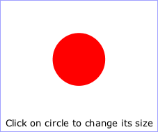
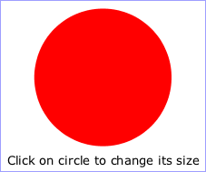

SVG content can be interactive (i.e., responsive to user-initiated events) by utilizing the following features in the SVG language:
This chapter describes:
Related information can be found in other chapters:
| SVG 2 Requirement: | Support anchor change events. |
|---|---|
| Resolution: | SVG 2 will consider adding HTML document wide events (including hashchange) apply to SVG documents where they make sense. |
| Purpose: | To allow authors to use the same set of event listener attributes on a root SVG element that they can on an HTML body or root element. |
| Owner: | Cameron (ACTION-3278) |
| SVG 2 Requirement: | Have event listener attributes on an appropriate interface. |
|---|---|
| Resolution: | SVG 2 will move all events listener attributes to Element, in accordance with the similar move in HTML. |
| Purpose: | To align with HTML. |
| Owner: | Cameron (ACTION-3283) |
| SVG 2 Requirement: | Introduce evt as an alias to event in event handlers. |
|---|---|
| Resolution: | We decide to resolve ISSUE-2176 by introducing evt as an alias to event in event handlers. |
| Purpose: | To align with HTML. |
| Owner: | Cameron (ACTION-3093) |
| SVG 2 Requirement: | Support drag & drop functionality. |
|---|---|
| Resolution: | SVG 2 may require drag & drop functionality, and we'll investigate HTML5's functionality for that. |
| Purpose: | To allow easier drag & drop in SVG, and to align with HTML. |
| Owner: | Erik (ACTION-3328) |
The following aspects of SVG are affected by events:
A number of events defined in SVG 1.1, SVGLoad, SVGError etc, have been replaced with the equivalent unprefixed events defined in DOM 3 Events and HTML.
There should be some more modern examples of using events in svg, e.g touch events (w reference to touch events spec). Device orientation events might also be of interest.
The following table lists the events defined by this specification, or that have further requirements or clarifications compared to the specification(s) where they are defined.
The Event name in the first column is the name to use within SVG's animation elements to define the events which can start or end animations. The DOM3 Event name in the second column is the name to use when defining DOM 3 event listeners ([DOM3EVENTS], section 4.3).
For events not listed in the table, such as events introduced in HTML or DOM 3 Events, the respective event type is the name to use within SVG's animation elements.
Requirements in the table on whether an event of a given type
bubbles or is cancelable apply only to events that are created and
dispatched by the user agent. Events of those types created from script
using the createEvent method on the Document interface can be made to bubble
or be cancelable with the
initEvent
method.
| Event name and description | DOM3 Event name | Event category | Event attribute name |
|---|---|---|---|
load The load event is dispatched only to structurally external elements and to the Window, when the corresponding external resources have finished loading. Note that due to it's relationship with Window the load event on 'svg' elements is only dispatched when all resources in the document have been completely loaded. The load event and the error event on structurally external elements are mutually exclusive, only one of these events must be dispatched when processing the element in question. load events do not bubble and are not cancelable. In previous SVG specifications the load event was called SVGLoad and could be dispatched immediately after parsing an element but before the related resource(s) were fully loaded. |
(same) | none | onload |
unload Only applicable to outermost svg elements. The unload event occurs when the DOM implementation removes a document from a window or frame. unload events do not bubble and are not cancelable. |
(same) | none | onunload |
error The error event occurs when a structurally external element does not load properly or when an error occurs during script execution. error events bubble but are not cancelable. |
(same) | none | onerror |
beginEvent Occurs when an animation element begins. For details, see the description of Interface TimeEvent in the SMIL Animation specification. |
none | none | onbegin |
endEvent Occurs when an animation element ends. For details, see the description of Interface TimeEvent in the SMIL Animation specification. |
none | none | onend |
repeatEvent Occurs when an animation element repeats. It is raised each time the element repeats, after the first iteration. For details, see the description of Interface TimeEvent in the SMIL Animation specification. |
none | none | onrepeat |
Details on the parameters passed to event listeners for the event types for UI Events can be found in the ([ DOM3EVENTS]) and ([UIEVENTS]) specifications where the keybard event definition in UIEVENTS takes precedence over that in DOM3EVENTS. For other event types, the parameters passed to event listeners are described elsewhere in this specification.
Likewise, event-value timing specifiers used in animation element 'animate/begin' and 'animate/end' attributes are resolved to concrete times only in response to "bubbling" and "at target" phase events dispatched to the relevant element.
On user agents which support interactivity, it is common for authors to define SVG documents such that they are responsive to user interface events. Among the set of possible user events are pointer events, keyboard events, and document events.
In response to user interface (UI) events, the author might start an animation, perform a hyperlink to another Web page, highlight part of the document (e.g., change the color of the graphics elements which are under the pointer), initiate a "roll-over" (e.g., cause some previously hidden graphics elements to appear near the pointer) or launch a script which communicates with a remote database.
User interface events that occur because of user actions performed on a pointer device are called pointer events.
Many systems support pointer devices such as a mouse or trackball. On systems which use a mouse, pointer events consist of actions such as mouse movements and mouse clicks. On systems with a different pointer device, the pointing device often emulates the behavior of the mouse by providing a mechanism for equivalent user actions, such as a button to press which is equivalent to a mouse click.
For each pointer event, the SVG user agent determines the target element of a given pointer event. The target element is the topmost graphics element whose relevant graphical content is under the pointer at the time of the event. (See property 'pointer-events' for a description of how to determine whether an element's relevant graphical content is under the pointer, and thus in which circumstances that graphic element can be the target element for a pointer event.) When an element is not displayed (i.e., when the 'display' property on that element or one of its ancestors has a value of none), that element cannot be the target of pointer events.
If a target element for the pointer event exists, then the event is dispatched to that element according to the normal event flow ([DOM3EVENTS], section 1.2). For shadow trees created by the 'use' element or via script, the event must follow the Shadow DOM event dispatching algorithm [SHADOWDOM]
If a target element for the pointer event does not exist, then the event is ignored.
There are two distinct aspects of pointer-device interaction with an element or area:
Determining whether a pointer event results in a positive hit-test depends upon the position of the pointer, the size and shape of the graphics element, and the computed value of the 'pointer-events' property on the element. The definition of the 'pointer-events' property below describes the exact region that is sensitive to pointer events for a given type of graphics element.
Note that the 'svg' element is not a graphics element, and in a Conforming SVG Stand-Alone File a outermost svg element will never be the target of pointer events, though events can bubble to this element. If a pointer event does not result in a positive hit-test on a graphics element, then it should evoke any user-agent-specific window behavior, such as a presenting a context menu or controls to allow zooming and panning of an SVG document fragment.
This specification does not define the behavior of pointer events on the outermost svg element for SVG images which are embedded by reference or inclusion within another document, e.g., whether the outermost svg element embedded in an HTML document intercepts mouse click events; future specifications may define this behavior, but for the purpose of this specification, the behavior is implementation-specific.
An element which is the target of a user interface event may have particular interaction behaviors, depending upon the type of element and whether it has explicit associated interactions, such as scripted event listeners, CSS pseudo-classes matches, or declarative animations with event-based timing. The algorithm and order for processing user interface events for a given target element, after dispatching the DOM event, is as follows:
preventDefault()
DOM method, then no further processing for this element is performed, and the
event follows the event dispatch and DOM event flow processing
as described in DOM Level 3 Events
[DOM3EVENTS] (or its successor);:hover,
:active, or :focus as described in
[CSS21], section 5.11, then the relevant class
properties are applied;In different circumstances, authors may want to control under what conditions particular graphic elements can become the target of pointer events. For example, the author might want a given element to receive pointer events only when the pointer is over the stroked perimeter of a given shape. In other cases, the author might want a given element to ignore pointer events under all circumstances so that graphical elements underneath the given element will become the target of pointer events.
The effects of masking and clipping differ with respect to pointer events. A clip path is a geometric boundary, and a given point is clearly either inside or outside that boundary; thus, pointer events must be captured normally over the rendered areas of a clipped element, but must not be captured over the clipped areas, as described in the definition of clipping paths. By contrast, a mask is not a binary transition, but a pixel operation, and different behavior for fully transparent and almost-but-not-fully-transparent may be confusingly arbitrary; as a consequence, for elements with a mask applied, pointer events must still be captured even in areas where the mask goes to zero opacity. If an author wishes to achieve an effect where the transparent parts of a mask allow pointer events to pass to an element below, a combination of masking and clipping may be used.
The 'filter property' property has no effect on pointer events processing, and must in this context be treated as if the 'filter property' wasn't specified.
For example, suppose a circle with a 'stroke' of red (i.e., the outline is solid red) and a 'fill' of none (i.e., the interior is not painted) is rendered directly on top of a rectangle with a 'fill' of blue. The author might want the circle to be the target of pointer events only when the pointer is over the perimeter of the circle. When the pointer is over the interior of the circle, the author might want the underlying rectangle to be the target element of pointer events.
The 'pointer-events' property specifies under what circumstances a given element can be the target element for a pointer event. It affects the circumstances under which the following are processed:
| Name: | pointer-events |
|---|---|
| Value: | bounding-box | visiblePainted | visibleFill | visibleStroke | visible | painted | fill | stroke | all | none |
| Initial: | visiblePainted |
| Applies to: | container elements, graphics elements and text content child elements |
| Inherited: | yes |
| Percentages: | N/A |
| Media: | visual |
| Computed value: | as specified |
| Animatable: | yes |
For text elements, hit-testing is performed on a character cell basis:
For raster images, hit-testing is either performed on a whole-image basis (i.e., the rectangular area for the image is one of the determinants for whether the image receives the event) or on a per-pixel basis (i.e., the alpha values for pixels under the pointer help determine whether the image receives the event):
Note that for raster images, the values of properties 'opacity', 'fill-opacity', 'stroke-opacity', 'fill' and 'stroke' do not affect event processing.
| SVG 2 Requirement: | Support level of detail control. |
|---|---|
| Resolution: | We will support Level of Detail control in SVG 2. |
| Purpose: | Control visibility of elements based on zoom level (useful, for example, in mapping). |
| Owner: | Doug (no action) |
| Note: | See Tiling and Layering Module for SVG 1.2 Tiny. |
Magnification represents a complete, uniform transformation on an SVG document fragment, where the magnify operation scales all graphical elements by the same amount. A magnify operation has the effect of a supplemental scale and translate transformation placed at the outermost level on the SVG document fragment (i.e., outside the outermost svg element).
Panning represents a translation (i.e., a shift) transformation on an SVG document fragment in response to a user interface action.
SVG user agents that operate in interaction-capable user environments are required to support the ability to magnify and pan.
The outermost svg element in an SVG document fragment has attribute 'svg/zoomAndPan', which takes the possible values of disable and magnify, with the default being magnify.
The zoomAndPan attribute is at risk, it has no known implementations and is unlikely to be implemented. See Github issue #56.
| Name | Value | Initial value | Animatable |
|---|---|---|---|
| zoomAndPan | [ disable | magnify ] | disable | no |
If disable, the user agent shall disable any magnification and panning controls and not allow the user to magnify or pan on the given document fragment.
If magnify, in environments that support user interactivity, the user agent shall provide controls to allow the user to perform a "magnify" operation on the document fragment.
If a 'svg/zoomAndPan' attribute is assigned to an inner 'svg' element, the 'svg/zoomAndPan' setting on the inner 'svg' element will have no effect on the SVG user agent.
Some interactive display environments provide the ability to modify the appearance of the pointer, which is also known as the cursor. Three types of cursors are available:
The 'cursor property' property is used to specify which cursor to use. The 'cursor property' property can be used to reference standard built-in cursors by specifying a keyword such as crosshair or a custom cursor. Custom cursors are referenced via a <url> and can point to either an external resource such as a platform-specific cursor file or to a 'cursor element' element, which can be used to define a platform-independent cursor.
See the CSS Basic User Interface Module Level 3 specification for the definition of 'cursor property'. [CSS3UI]
SVG uses the 'cursor property' property to specify the type of cursor to be displayed for the pointing device when it is over a region of an element that is sensitive to pointer events, according to the value of the 'pointer-events' property. SVG extends the definition of 'cursor property' from the CSS Basic User Interface Module Level 3 specification as follows:
The 'cursor element' element can be used to define a platform-independent custom cursor. A recommended approach for defining a platform-independent custom cursor is to create a PNG image [PNG] and define a 'cursor element' element that references the PNG image and identifies the exact position within the image which is the pointer position (i.e., the hot spot).
The PNG format is recommended because it supports the ability to define a transparency mask via an alpha channel. If a different image format is used, this format should support the definition of a transparency mask (two options: provide an explicit alpha channel or use a particular pixel color to indicate transparency). If the transparency mask can be determined, the mask defines the shape of the cursor; otherwise, the cursor is an opaque rectangle. Typically, the other pixel information (e.g., the R, G and B channels) defines the colors for those parts of the cursor which are not masked out. Note that cursors usually contain at least two colors so that the cursor can be visible over most backgrounds.
Attribute definitions:
| Name | Value | Initial value | Animatable |
|---|---|---|---|
| x, y | <length> | 0 | yes |
| Name | Value | Initial value | Animatable |
|---|---|---|---|
| href | URL [URL] | (none) | yes |
SVG user agents are required to support PNG format images as targets of the 'href' attribute.
SVG uses the same focus model as HTML, modified for SVG as described in this section. At most one element in each document is focused at a time; if the document as a whole has system focus, this element becomes the target of all keyboard events.
When an element is focused,
the element matches the CSS :focus pseudo-class.
Interactive user agents must visually indicate focus (usually with an outline)
when the focus changes because of a user input event
from the keyboard or other non-pointing device
and may indicate focus at all times.
Authors may use the :focus pseudo-class to
replace the visual indication with one more suitable to the graphic,
(such as a stroke on a shape)
but should not use it to remove visual indications of focus completely.
The following SVG elements are focusable in an interactive document. Any instance of such an element in a use-element shadow tree is also focusable. For the purpose of the HTML focus model, interactive user agents must treat them as focusable areas whose tabindex focus flag should be set:
In the case of user-agent supplied controls, the element may have more than one focusable area, for each sub-control.
In addition, all 'a' elements that are valid links are focusable, and their tabindex focus flag must be set unless the user agent normally provides an alternative method of keyboard traversal of links.
For compatibility with content that used the SVG Tiny 1.2 focusable attribute, user agents should treat an element with a value of true for that attribute as focusable. In new content, authors should either omit the focusable attribute or use it only in combination with a corresponding tabindex value of 0.
User agents may treat other elements as focusable, particularly if keyboard interaction is the only or primary means of user input. In particular, user agents may support using keyboard focus to reveal 'title' element text as tooltips, and may allow focus to reach elements which have been assigned listeners for mouse, pointer, or focus events. Authors should not rely on this behavior; all interactive elements should directly support keyboard interaction.
The sequential focus order is generated from the set of all focusable elements, processing 'tabindex' attributes on SVG elements in the same way as tabindex attributes on HTML elements. Content within a use-element shadow tree is inserted in the focus order as if it was child content of the 'use' element.
When the user agent supports scrolling or panning of the SVG document, and focus moves to an element that is currently outside the SVG viewport, the user agent should scroll or pan the document until the focused element is within the SVG viewport.
As in HTML, an SVG element that is focusable but does not have a defined activation behavior has an activation behaviour that does nothing (unless a script specifically responds to it).
This means that an element that is only focusable
because of its 'tabindex' attribute
will fire a click event
in response to a non-mouse activation
(e.g. hitting the "enter" key while the element has focus).
For documents that contain a mix of inline HTML and SVG, focus is handled for the document as a whole (with a combined sequential focus order), not with each inline SVG or HTML fragment as an isolated subdocument.
For example, in the following document, pressing Tab would cycle the focus between elements A, B and C, in that order.
<!DOCTYPE html> <button id="A" tabindex="1">First thing</button> <button id="C" tabindex="2">Third thing</button> <svg width="200" height="200"> <text id="B" tabindex="1" x="100" y="100">Second thing</text> </svg>
Note that SVG elements do not have an equivalent of HTML's accesskey attribute.
For every event type that the user agent supports, SVG supports that as an event attribute, following the same requirements as for event handler content attributes [HTML]. The event attributes are available on all SVG elements.
The contents of event attributes are always interpreted as ECMAScript, as if processed with the media type 'application/ecmascript'. [RFC2046][RFC4329]
Event attributes are not animatable.
Below are the definitions for the animation event attributes. These can be specified on the animation elements.
Attribute definitions:
| Name | Value | Initial value | Animatable |
|---|---|---|---|
| onbegin, onend, onrepeat | (see below) | (none) | no |
| SVG 2 Requirement: | Consider allowing async/defer on 'script'. |
|---|---|
| Resolution: | SVG 2 will allow async/defer on 'script'. |
| Purpose: | To align with HTML. |
| Owner: | Cameron (ACTION-3280) |
| SVG 2 Requirement: | Incorporate SVG Tiny 1.2 script processing model. |
|---|---|
| Resolution: | SVG 2 will define how inline scriptable content will be processed, in a compatible way to HTML5 |
| Purpose: | To have consistent script running behavior across HTML and SVG. |
| Owner: | Cameron (ACTION-3282) |
A 'script' element is equivalent to the 'script' element in HTML and thus is the place for scripts (e.g., ECMAScript). Any functions defined within any 'script' element have a "global" scope across the entire current document.
The script's text content is never directly rendered; the 'display' value for the 'script element' element must always be set to none by the user agent style sheet, and this declaration must have importance over any other CSS rule or presentation attribute.
Before attempting to execute the 'script' element the resolved media type value for 'script/type' must be inspected. If the SVG user agent does not support the scripting language then the 'script' element must not be executed.
This example defines a function
circle_click which is called by the
'onclick' event attribute on the 'circle' element. The drawing
below on the left is the initial image. The drawing below on the right shows
the result after clicking on the circle.
]]>
|   |
Attribute definitions:
| Name | Value | Initial value | Animatable |
|---|---|---|---|
| crossorigin | [ anonymous | use-credentials ]? | (see HTML definition of attribute) | yes |
The crossorigin attribute is a CORS settings attribute, and unless otherwise specified follows the same processing rules as in html [HTML].
| Name | Value | Initial value | Animatable |
|---|---|---|---|
| type | (see below) | application/ecmascript | no |
| Name | Value | Initial value | Animatable |
|---|---|---|---|
| href | URL [URL] | (none) | no |
The URL is processed and the resource is fetched as described in the Linking chapter.
An SVGCursorElement object represents a 'cursor element' element in the DOM.
interface SVGCursorElement : SVGElement { [SameObject] readonly attribute SVGAnimatedLength x; [SameObject] readonly attribute SVGAnimatedLength y; }; SVGCursorElement implements SVGURIReference;
The x and y IDL attributes reflect the 'x' and 'y' content attributes.
An SVGScriptElement object represents a 'script' element in the DOM.
interface SVGScriptElement : SVGElement { attribute DOMString type; attribute DOMString? crossOrigin; }; SVGScriptElement implements SVGURIReference;
The type IDL attribute reflects the 'type' content attribute.
The crossOrigin IDL attribute reflects the 'crossorigin' content attribute.
{kind=link}